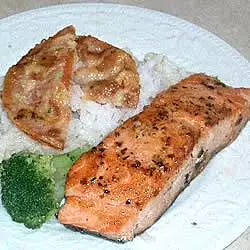

Salmon, Rice, and Fried Tomatoes

Description
Pan-cooked salmon is topped with seasoned fried tomatoes and served over rice.
Ingredients
- 1 cup uncooked long grain white rice
- 2 cups water
- 1½ tablespoons lemon pepper, divided
- 1 tablespoon dried dill weed, divided
- 2 tablespoons vegetable oil, divided
- 1 pound salmon
- 1 tomato, sliced 1/2 inch thick
- 2 eggs, beaten
- 1 cup all-purpose flour
Steps
- Bring the rice and water to a boil in a pot. Season with 1 tablespoon lemon pepper and 1/2 tablespoon dill weed. Reduce
heat to low, cover, and simmer 20 minutes.
- Heat 1 tablespoon oil in a skillet over medium heat. Place salmon in the skillet, and cook 20 minutes, turning once,
until lightly browned and easily flaked with a fork. Set aside.
- Season the tomato slices with remaining lemon pepper and dill. Place the eggs and flour in 2 separate dishes. Dip each
tomato slice in the egg to coat, then press in the flour, coating both sides.
- Heat remaining oil in the skillet over medium-high heat. Place tomato slices in the skillet, and cook 5 minutes on each
side, until lightly browned. Serve salmon over the cooked rice, and top with fried tomatoes.